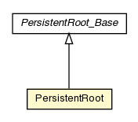

pt.ist.fenixframework.pstm
Class PersistentRoot

java.lang.Object
 pt.ist.fenixframework.pstm.AbstractDomainObject
pt.ist.fenixframework.pstm.OneBoxDomainObject
pt.ist.fenixframework.pstm.PersistentRoot_Base
pt.ist.fenixframework.pstm.PersistentRoot
pt.ist.fenixframework.pstm.AbstractDomainObject
pt.ist.fenixframework.pstm.OneBoxDomainObject
pt.ist.fenixframework.pstm.PersistentRoot_Base
pt.ist.fenixframework.pstm.PersistentRoot
- All Implemented Interfaces:
- FenixDomainObject, Serializable, DomainObject
public class PersistentRoot
- extends PersistentRoot_Base
- See Also:
- Serialized Form
| Methods inherited from class pt.ist.fenixframework.pstm.PersistentRoot_Base |
checkDisconnected, create$allLists, get$$relationFor, getNext, getPrevious, getRootKey, getRootObject, hasNext, hasPrevious, hasRootObject, make$newState, readStateFromResultSet, removeNext, removePrevious, removeRootObject, setNext, setPrevious, setRootKey, setRootObject |
| Methods inherited from class pt.ist.fenixframework.pstm.AbstractDomainObject |
deleteDomainObject, doCheckDisconnectedAction, ensureIdInternal, ensureOid, equals, fromExternalId, fromOID, getColumnIndex, getExternalId, getIdInternal, getOid, getOID, handleAttemptToDeleteConnectedObject, hashCode, isDeleted, toString, writeReplace |
getRoot
public static <T extends DomainObject> T getRoot(String key)
getRoot
public static <T extends DomainObject> T getRoot()
addRoot
public static void addRoot(String key,
AbstractDomainObject domainObject)
initRootIfNeeded
public static void initRootIfNeeded(Config config)
Copyright © 2013. All Rights Reserved.